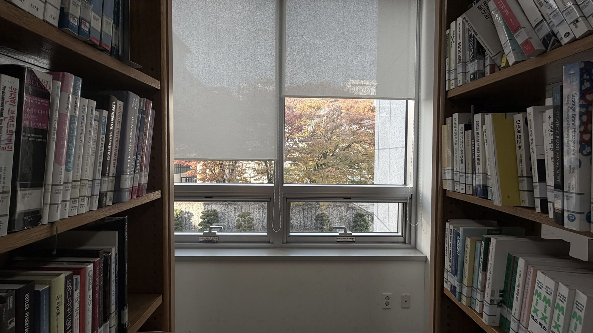
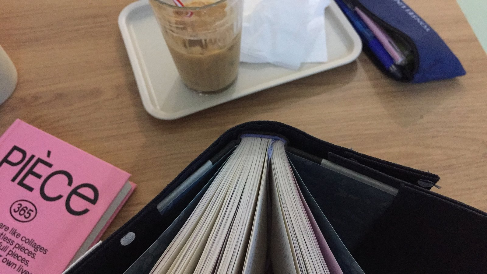

시험기간, 가기 전에 자리부터 확인하세요. 카페에 도착하면 카드를 뒤집어 지금 자리 상태를 눌러주세요. 다음 사람이 덜 헤매요. 2시간이 지난 정보는 자동으로 사라져요. 지금 보이는 자리 상태는 예시예요.
조건에 맞는 카페가 없어요. 검색어나 필터를 바꿔보세요.
핀을 누르면 그 카페의 지금 자리 상태와 정보가 보여요. 거기서 바로 상태를 알려줄 수도 있어요.
불편한 점, 바라는 점, 빠진 카페를 알려주세요. 남겨주신 글은 만든 사람만 볼 수 있어요. 이름이나 연락처는 적지 않아도 돼요.
핀 위치 고치는 화면이에요. 아래 목록에서 카페를 고르고, 지도에서 실제 위치를 누르면 핀이 옮겨져요. 핀을 끌어서 옮겨도 돼요. 다 고치면 맨 아래 위치 복사를 눌러서 Claude에게 붙여넣어 주세요.
카페를 먼저 골라주세요.